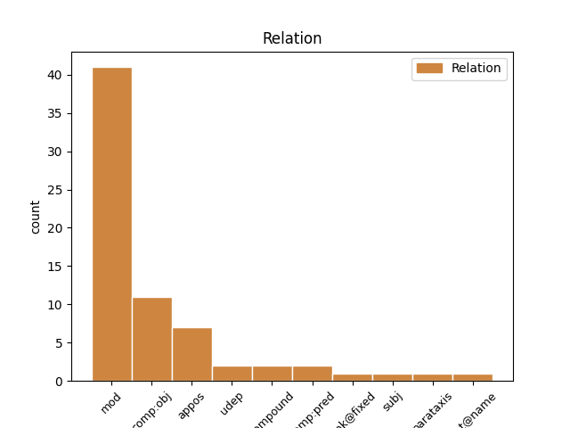
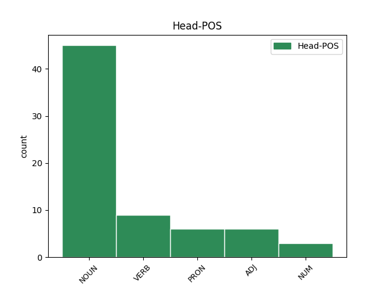

Distribution of features within this leaf



Agreement Rules sorted by frequency.
- When the dependent token is the modifer(mod) of the head token, and the head token is NOUN and the dependent token is NOUN.
1 En _ _ _ _ 0 _ _ _
2 o _ _ _ _ 0 _ _ _
3 preciso _ _ _ _ 0 _ _ _
4 momento _ _ _ _ 0 _ _ _
5 en _ _ _ _ 0 _ _ _
6 que _ _ _ _ 0 _ _ _
7 se _ _ _ _ 0 _ _ _
8 publican _ _ _ _ 0 _ _ _
9 estas _ _ _ _ 0 _ _ _
10 liñas _ _ _ _ 0 _ _ _
11 , _ _ _ _ 0 _ _ _
12 un _ _ _ _ 0 _ _ _
13 total _ _ _ _ 0 _ _ _
14 de _ _ _ _ 0 _ _ _
15 1.405 _ _ _ _ 0 _ _ _
16 traballadores _ _ _ _ 0 _ _ _
17 ferroláns _ _ _ _ 0 _ _ _
18 _ _ _ _ _ 0 _ _ _
19 704 _ _ _ _ 0 _ _ _
20 de _ _ _ _ 0 _ _ _
21 Astano _ _ _ _ 0 _ _ _
22 e _ _ _ _ 0 _ _ _
23 701 _ _ _ _ 0 _ _ _
24 de _ _ _ _ 0 _ _ _
25 a _ _ _ _ 0 _ _ _
26 antiga _ _ _ _ 0 _ _ _
27 Bazán _ _ _ _ 0 _ _ _
28 _ _ _ _ _ 0 _ _ _
29 están _ _ _ _ 0 _ _ _
30 collendo _ _ _ _ 0 _ _ _
31 o _ _ _ _ 0 _ _ _
32 camiño _ _ _ _ 0 _ _ _
33 de _ _ _ _ 0 _ _ _
34 volta _ _ _ _ 0 _ _ _
35 a _ _ _ _ 0 _ _ _
36 as _ _ _ _ 0 _ _ _
37 súas _ _ _ _ 0 _ _ _
38 casas _ _ _ _ 0 _ _ _
39 como _ _ _ _ 0 _ _ _
40 consecuencia _ _ _ _ 0 _ _ _
41 de _ _ _ _ 0 _ _ _
42 un _ _ _ _ 0 _ _ _
43 expediente _ _ _ _ 0 _ _ _
44 de _ _ _ _ 0 _ _ _
45 regulación _ _ _ _ 0 _ _ _
46 de _ _ _ _ 0 _ _ _
47 emprego _ _ _ _ 0 _ _ _
48 , _ _ _ _ 0 _ _ _
49 aceptado _ _ _ _ 0 _ _ _
50 por _ _ _ _ 0 _ _ _
51 Comisións _ _ _ _ 0 _ _ _
52 Obreiras _ _ _ _ 0 _ _ _
53 e _ _ _ _ 0 _ _ _
54 UGT _ _ _ _ 0 _ _ _
55 e _ _ _ _ 0 _ _ _
56 rechazado _ _ _ _ 0 _ _ _
57 por _ _ _ _ 0 _ _ _
58 la _ _ _ _ 0 _ _ _
59 CIG _ _ _ _ 0 _ _ _
60 , _ _ _ _ 0 _ _ _
61 que _ _ _ _ 0 _ _ _
62 os _ _ _ _ 0 _ _ _
63 leva _ _ _ _ 0 _ _ _
64 dous _ _ _ _ 0 _ _ _
65 anos ano NOUN Scmp Gender=Masc|Number=Plur 68 mod _ _
66 a _ _ _ _ 0 _ _ _
67 o _ _ _ _ 0 _ _ _
68 paro paro NOUN Scms Gender=Masc|Number=Sing 0 _ _ _
69 , _ _ _ _ 0 _ _ _
70 a _ _ _ _ 0 _ _ _
71 o _ _ _ _ 0 _ _ _
72 subsidio _ _ _ _ 0 _ _ _
73 de _ _ _ _ 0 _ _ _
74 o _ _ _ _ 0 _ _ _
75 INEM _ _ _ _ 0 _ _ _
76 despois _ _ _ _ 0 _ _ _
77 , _ _ _ _ 0 _ _ _
78 até _ _ _ _ 0 _ _ _
79 que _ _ _ _ 0 _ _ _
80 cumpran _ _ _ _ 0 _ _ _
81 60 _ _ _ _ 0 _ _ _
82 anos _ _ _ _ 0 _ _ _
83 , _ _ _ _ 0 _ _ _
84 e _ _ _ _ 0 _ _ _
85 , _ _ _ _ 0 _ _ _
86 a _ _ _ _ 0 _ _ _
87 continuación _ _ _ _ 0 _ _ _
88 , _ _ _ _ 0 _ _ _
89 a _ _ _ _ 0 _ _ _
90 a _ _ _ _ 0 _ _ _
91 súa _ _ _ _ 0 _ _ _
92 prexubilación _ _ _ _ 0 _ _ _
93 . _ _ _ _ 0 _ _ _
1 Por _ _ _ _ 0 _ _ _
2 fin _ _ _ _ 0 _ _ _
3 , _ _ _ _ 0 _ _ _
4 en _ _ _ _ 0 _ _ _
5 o _ _ _ _ 0 _ _ _
6 desenvolvemento _ _ _ _ 0 _ _ _
7 de _ _ _ _ 0 _ _ _
8 as _ _ _ _ 0 _ _ _
9 Bases _ _ _ _ 0 _ _ _
10 haberá _ _ _ _ 0 _ _ _
11 que _ _ _ _ 0 _ _ _
12 propor _ _ _ _ 0 _ _ _
13 as _ _ _ _ 0 _ _ _
14 formas _ _ _ _ 0 _ _ _
15 de _ _ _ _ 0 _ _ _
16 encaixe _ _ _ _ 0 _ _ _
17 constitucional _ _ _ _ 0 _ _ _
18 necesarias _ _ _ _ 0 _ _ _
19 , _ _ _ _ 0 _ _ _
20 incluída incluír VERB V0p0fs Gender=Fem|Number=Sing|VerbForm=Part 0 _ _ _
21 a _ _ _ _ 0 _ _ _
22 modificación modificación NOUN Scfs Gender=Fem|Number=Sing 20 comp:obj _ _
23 precisa _ _ _ _ 0 _ _ _
24 de _ _ _ _ 0 _ _ _
25 a _ _ _ _ 0 _ _ _
26 Constitución _ _ _ _ 0 _ _ _
27 . _ _ _ _ 0 _ _ _
1 O _ _ _ _ 0 _ _ _
2 BNG _ _ _ _ 0 _ _ _
3 , _ _ _ _ 0 _ _ _
4 por _ _ _ _ 0 _ _ _
5 la _ _ _ _ 0 _ _ _
6 súa _ _ _ _ 0 _ _ _
7 banda _ _ _ _ 0 _ _ _
8 , _ _ _ _ 0 _ _ _
9 pretende _ _ _ _ 0 _ _ _
10 que _ _ _ _ 0 _ _ _
11 , _ _ _ _ 0 _ _ _
12 a _ _ _ _ 0 _ _ _
13 mesma _ _ _ _ 0 _ _ _
14 reforma _ _ _ _ 0 _ _ _
15 estatutaria _ _ _ _ 0 _ _ _
16 , _ _ _ _ 0 _ _ _
17 que _ _ _ _ 0 _ _ _
18 , _ _ _ _ 0 _ _ _
19 en _ _ _ _ 0 _ _ _
20 a _ _ _ _ 0 _ _ _
21 práctica _ _ _ _ 0 _ _ _
22 , _ _ _ _ 0 _ _ _
23 faga _ _ _ _ 0 _ _ _
24 necesaria necesario ADJ A0fs Gender=Fem|Number=Sing 0 _ _ _
25 a _ _ _ _ 0 _ _ _
26 reforma reforma NOUN Scfs Gender=Fem|Number=Sing 24 comp:obj _ _
27 constitucional _ _ _ _ 0 _ _ _
28 , _ _ _ _ 0 _ _ _
29 superando _ _ _ _ 0 _ _ _
30 así _ _ _ _ 0 _ _ _
31 o _ _ _ _ 0 _ _ _
32 actual _ _ _ _ 0 _ _ _
33 marco _ _ _ _ 0 _ _ _
34 estatal _ _ _ _ 0 _ _ _
35 e _ _ _ _ 0 _ _ _
36 recoñecendo _ _ _ _ 0 _ _ _
37 o _ _ _ _ 0 _ _ _
38 dereito _ _ _ _ 0 _ _ _
39 a _ _ _ _ 0 _ _ _
40 a _ _ _ _ 0 _ _ _
41 autodeterminación _ _ _ _ 0 _ _ _
42 . _ _ _ _ 0 _ _ _
1 E _ _ _ _ 0 _ _ _
2 , _ _ _ _ 0 _ _ _
3 para _ _ _ _ 0 _ _ _
4 completarmos _ _ _ _ 0 _ _ _
5 este _ _ _ _ 0 _ _ _
6 trípode _ _ _ _ 0 _ _ _
7 , _ _ _ _ 0 _ _ _
8 trespés trespés NOUN Scms Gender=Masc|Number=Sing 0 _ _ _
9 ou _ _ _ _ 0 _ _ _
10 trepia _ _ _ _ 0 _ _ _
11 , _ _ _ _ 0 _ _ _
12 un _ _ _ _ 0 _ _ _
13 terceiro _ _ _ _ 0 _ _ _
14 pé pé NOUN Scms Gender=Masc|Number=Sing 8 appos _ _
15 que _ _ _ _ 0 _ _ _
16 traemos _ _ _ _ 0 _ _ _
17 de _ _ _ _ 0 _ _ _
18 o _ _ _ _ 0 _ _ _
19 inglés _ _ _ _ 0 _ _ _
20 . _ _ _ _ 0 _ _ _
1 Esta _ _ _ _ 0 _ _ _
2 película _ _ _ _ 0 _ _ _
3 , _ _ _ _ 0 _ _ _
4 moi _ _ _ _ 0 _ _ _
5 cinxida _ _ _ _ 0 _ _ _
6 a _ _ _ _ 0 _ _ _
7 o _ _ _ _ 0 _ _ _
8 que que PRON Tnms Gender=Masc|Number=Sing|PronType=Rel 0 _ _ _
9 pretende _ _ _ _ 0 _ _ _
10 narrar _ _ _ _ 0 _ _ _
11 , _ _ _ _ 0 _ _ _
12 eses _ _ _ _ 0 _ _ _
13 últimos _ _ _ _ 0 _ _ _
14 días día NOUN Scmp Gender=Masc|Number=Plur 8 mod _ _
15 de _ _ _ _ 0 _ _ _
16 a _ _ _ _ 0 _ _ _
17 guerra _ _ _ _ 0 _ _ _
18 , _ _ _ _ 0 _ _ _
19 non _ _ _ _ 0 _ _ _
20 evita _ _ _ _ 0 _ _ _
21 non _ _ _ _ 0 _ _ _
22 embargante _ _ _ _ 0 _ _ _
23 ( _ _ _ _ 0 _ _ _
24 e _ _ _ _ 0 _ _ _
25 pese _ _ _ _ 0 _ _ _
26 a _ _ _ _ 0 _ _ _
27 o _ _ _ _ 0 _ _ _
28 que _ _ _ _ 0 _ _ _
29 diga _ _ _ _ 0 _ _ _
30 Wenders _ _ _ _ 0 _ _ _
31 ) _ _ _ _ 0 _ _ _
32 algúns _ _ _ _ 0 _ _ _
33 pertinentes _ _ _ _ 0 _ _ _
34 punteos _ _ _ _ 0 _ _ _
35 que _ _ _ _ 0 _ _ _
36 contextualizan _ _ _ _ 0 _ _ _
37 os _ _ _ _ 0 _ _ _
38 feitos _ _ _ _ 0 _ _ _
39 . _ _ _ _ 0 _ _ _
1 Sería _ _ _ _ 0 _ _ _
2 a _ _ _ _ 0 _ _ _
3 mellor _ _ _ _ 0 _ _ _
4 opción _ _ _ _ 0 _ _ _
5 para _ _ _ _ 0 _ _ _
6 a _ _ _ _ 0 _ _ _
7 saúde _ _ _ _ 0 _ _ _
8 , _ _ _ _ 0 _ _ _
9 para _ _ _ _ 0 _ _ _
10 o _ _ _ _ 0 _ _ _
11 medio medio NOUN Scms Gender=Masc|Number=Sing 0 _ _ _
12 ambiente ambiente NOUN Scms Gender=Masc|Number=Sing 11 compound _ _
13 e _ _ _ _ 0 _ _ _
14 para _ _ _ _ 0 _ _ _
15 o _ _ _ _ 0 _ _ _
16 peto _ _ _ _ 0 _ _ _
17 . _ _ _ _ 0 _ _ _
1 Os _ _ _ _ 0 _ _ _
2 estaleiros _ _ _ _ 0 _ _ _
3 de _ _ _ _ 0 _ _ _
4 Ferrol _ _ _ _ 0 _ _ _
5 , _ _ _ _ 0 _ _ _
6 que _ _ _ _ 0 _ _ _
7 ocupaban _ _ _ _ 0 _ _ _
8 arredor _ _ _ _ 0 _ _ _
9 de _ _ _ _ 0 _ _ _
10 14.000 _ _ _ _ 0 _ _ _
11 traballadores _ _ _ _ 0 _ _ _
12 cando _ _ _ _ 0 _ _ _
13 corrían _ _ _ _ 0 _ _ _
14 os _ _ _ _ 0 _ _ _
15 anos _ _ _ _ 0 _ _ _
16 70 _ _ _ _ 0 _ _ _
17 , _ _ _ _ 0 _ _ _
18 fican _ _ _ _ 0 _ _ _
19 agora _ _ _ _ 0 _ _ _
20 atendidos _ _ _ _ 0 _ _ _
21 por _ _ _ _ 0 _ _ _
22 2.000 2.000 NUM Ncnmp Gender=Masc|Number=Plur|NumType=Card 0 _ _ _
23 , _ _ _ _ 0 _ _ _
24 en _ _ _ _ 0 _ _ _
25 a _ _ _ _ 0 _ _ _
26 súa _ _ _ _ 0 _ _ _
27 maior _ _ _ _ 0 _ _ _
28 parte _ _ _ _ 0 _ _ _
29 administrativos administrativo NOUN Scmp Gender=Masc|Number=Plur 22 mod _ _
30 e _ _ _ _ 0 _ _ _
31 técnicos _ _ _ _ 0 _ _ _
32 . _ _ _ _ 0 _ _ _
1 En _ _ _ _ 0 _ _ _
2 a _ _ _ _ 0 _ _ _
3 súa _ _ _ _ 0 _ _ _
4 base _ _ _ _ 0 _ _ _
5 V _ _ _ _ 0 _ _ _
6 , _ _ _ _ 0 _ _ _
7 a _ _ _ _ 0 _ _ _
8 proposta _ _ _ _ 0 _ _ _
9 presenta _ _ _ _ 0 _ _ _
10 varias _ _ _ _ 0 _ _ _
11 medidas _ _ _ _ 0 _ _ _
12 de _ _ _ _ 0 _ _ _
13 cohesión _ _ _ _ 0 _ _ _
14 social _ _ _ _ 0 _ _ _
15 destinadas _ _ _ _ 0 _ _ _
16 , _ _ _ _ 0 _ _ _
17 entre _ _ _ _ 0 _ _ _
18 outras _ _ _ _ 0 _ _ _
19 cousas _ _ _ _ 0 _ _ _
20 , _ _ _ _ 0 _ _ _
21 a _ _ _ _ 0 _ _ _
22 garantir _ _ _ _ 0 _ _ _
23 a _ _ _ _ 0 _ _ _
24 igualdade _ _ _ _ 0 _ _ _
25 de _ _ _ _ 0 _ _ _
26 as _ _ _ _ 0 _ _ _
27 mulleres _ _ _ _ 0 _ _ _
28 en _ _ _ _ 0 _ _ _
29 a _ _ _ _ 0 _ _ _
30 participación _ _ _ _ 0 _ _ _
31 e _ _ _ _ 0 _ _ _
32 en _ _ _ _ 0 _ _ _
33 a _ _ _ _ 0 _ _ _
34 distribución _ _ _ _ 0 _ _ _
35 de _ _ _ _ 0 _ _ _
36 a _ _ _ _ 0 _ _ _
37 riqueza _ _ _ _ 0 _ _ _
38 , _ _ _ _ 0 _ _ _
39 en _ _ _ _ 0 _ _ _
40 a _ _ _ _ 0 _ _ _
41 seguridade _ _ _ _ 0 _ _ _
42 fronte fronte NOUN Scfs Gender=Fem|Number=Sing 0 _ _ _
43 a _ _ _ _ 0 _ _ _
44 a _ _ _ _ 0 _ _ _
45 intimidación intimidación NOUN Scfs Gender=Fem|Number=Sing 42 comp:obj _ _
46 e _ _ _ _ 0 _ _ _
47 a _ _ _ _ 0 _ _ _
48 a _ _ _ _ 0 _ _ _
49 violencia _ _ _ _ 0 _ _ _
50 , _ _ _ _ 0 _ _ _
51 en _ _ _ _ 0 _ _ _
52 a _ _ _ _ 0 _ _ _
53 incorporación _ _ _ _ 0 _ _ _
54 de _ _ _ _ 0 _ _ _
55 o _ _ _ _ 0 _ _ _
56 saber _ _ _ _ 0 _ _ _
57 feminino _ _ _ _ 0 _ _ _
58 a _ _ _ _ 0 _ _ _
59 a _ _ _ _ 0 _ _ _
60 sociedade _ _ _ _ 0 _ _ _
61 , _ _ _ _ 0 _ _ _
62 en _ _ _ _ 0 _ _ _
63 a _ _ _ _ 0 _ _ _
64 defensa _ _ _ _ 0 _ _ _
65 de _ _ _ _ 0 _ _ _
66 a _ _ _ _ 0 _ _ _
67 liberdade _ _ _ _ 0 _ _ _
68 sexual _ _ _ _ 0 _ _ _
69 de _ _ _ _ 0 _ _ _
70 as _ _ _ _ 0 _ _ _
71 mulleres _ _ _ _ 0 _ _ _
72 , _ _ _ _ 0 _ _ _
73 etc. _ _ _ _ 0 _ _ _
1 E _ _ _ _ 0 _ _ _
2 pasa _ _ _ _ 0 _ _ _
3 o _ _ _ _ 0 _ _ _
4 mesmo _ _ _ _ 0 _ _ _
5 con _ _ _ _ 0 _ _ _
6 as _ _ _ _ 0 _ _ _
7 bases _ _ _ _ 0 _ _ _
8 XIII _ _ _ _ 0 _ _ _
9 ( _ _ _ _ 0 _ _ _
10 A _ _ _ _ 0 _ _ _
11 actividade _ _ _ _ 0 _ _ _
12 económica _ _ _ _ 0 _ _ _
13 e _ _ _ _ 0 _ _ _
14 o _ _ _ _ 0 _ _ _
15 desenvolvemento _ _ _ _ 0 _ _ _
16 substentábel _ _ _ _ 0 _ _ _
17 ) _ _ _ _ 0 _ _ _
18 , _ _ _ _ 0 _ _ _
19 a _ _ _ _ 0 _ _ _
20 XIV _ _ _ _ 0 _ _ _
21 ( _ _ _ _ 0 _ _ _
22 O _ _ _ _ 0 _ _ _
23 financiamento financiamento NOUN Scms Gender=Masc|Number=Sing 0 _ _ _
24 público _ _ _ _ 0 _ _ _
25 de _ _ _ _ 0 _ _ _
26 o _ _ _ _ 0 _ _ _
27 Poder _ _ _ _ 0 _ _ _
28 galego _ _ _ _ 0 _ _ _
29 . _ _ _ _ 0 _ _ _
30 O _ _ _ _ 0 _ _ _
31 sistema sistema NOUN Scms Gender=Masc|Number=Sing 23 flat@name _ _
32 fiscal _ _ _ _ 0 _ _ _
33 e _ _ _ _ 0 _ _ _
34 a _ _ _ _ 0 _ _ _
35 Facenda _ _ _ _ 0 _ _ _
36 galega _ _ _ _ 0 _ _ _
37 ) _ _ _ _ 0 _ _ _
38 ou _ _ _ _ 0 _ _ _
39 a _ _ _ _ 0 _ _ _
40 XV _ _ _ _ 0 _ _ _
41 ( _ _ _ _ 0 _ _ _
42 O _ _ _ _ 0 _ _ _
43 dereito _ _ _ _ 0 _ _ _
44 universal _ _ _ _ 0 _ _ _
45 a _ _ _ _ 0 _ _ _
46 a _ _ _ _ 0 _ _ _
47 prestación _ _ _ _ 0 _ _ _
48 sanitaria _ _ _ _ 0 _ _ _
49 e _ _ _ _ 0 _ _ _
50 a _ _ _ _ 0 _ _ _
51 sanidade _ _ _ _ 0 _ _ _
52 galega _ _ _ _ 0 _ _ _
53 ) _ _ _ _ 0 _ _ _
54 . _ _ _ _ 0 _ _ _
1 A _ _ _ _ 0 _ _ _
2 segunda _ _ _ _ 0 _ _ _
3 vén _ _ _ _ 0 _ _ _
4 de _ _ _ _ 0 _ _ _
5 o _ _ _ _ 0 _ _ _
6 inglés inglés ADJ Acms Gender=Masc|Number=Sing 0 _ _ _
7 pedigree pedigree NOUN Scms Gender=Masc|Number=Sing 6 mod _ _
8 mais _ _ _ _ 0 _ _ _
9 a _ _ _ _ 0 _ _ _
10 súa _ _ _ _ 0 _ _ _
11 orixe _ _ _ _ 0 _ _ _
12 está _ _ _ _ 0 _ _ _
13 en _ _ _ _ 0 _ _ _
14 o _ _ _ _ 0 _ _ _
15 francés _ _ _ _ 0 _ _ _
16 pied _ _ _ _ 0 _ _ _
17 de _ _ _ _ 0 _ _ _
18 grue _ _ _ _ 0 _ _ _
19 ' _ _ _ _ 0 _ _ _
20 pé _ _ _ _ 0 _ _ _
21 de _ _ _ _ 0 _ _ _
22 grou _ _ _ _ 0 _ _ _
23 ' _ _ _ _ 0 _ _ _
24 pois _ _ _ _ 0 _ _ _
25 en _ _ _ _ 0 _ _ _
26 os _ _ _ _ 0 _ _ _
27 rexistros _ _ _ _ 0 _ _ _
28 xenealóxicos _ _ _ _ 0 _ _ _
29 ingleses _ _ _ _ 0 _ _ _
30 utilizaba _ _ _ _ 0 _ _ _
31 se _ _ _ _ 0 _ _ _
32 un _ _ _ _ 0 _ _ _
33 signo _ _ _ _ 0 _ _ _
34 con _ _ _ _ 0 _ _ _
35 tres _ _ _ _ 0 _ _ _
36 riscos _ _ _ _ 0 _ _ _
37 que _ _ _ _ 0 _ _ _
38 lembraban _ _ _ _ 0 _ _ _
39 a _ _ _ _ 0 _ _ _
40 pegada _ _ _ _ 0 _ _ _
41 _ _ _ _ _ 0 _ _ _
42 aquí _ _ _ _ 0 _ _ _
43 si _ _ _ _ 0 _ _ _
44 _ _ _ _ _ 0 _ _ _
45 de _ _ _ _ 0 _ _ _
46 aquela _ _ _ _ 0 _ _ _
47 ave _ _ _ _ 0 _ _ _
48 . _ _ _ _ 0 _ _ _
1 Os _ _ _ _ 0 _ _ _
2 temas _ _ _ _ 0 _ _ _
3 ' _ _ _ _ 0 _ _ _
4 Camiño _ _ _ _ 0 _ _ _
5 de _ _ _ _ 0 _ _ _
6 as _ _ _ _ 0 _ _ _
7 estrelas _ _ _ _ 0 _ _ _
8 ' _ _ _ _ 0 _ _ _
9 , _ _ _ _ 0 _ _ _
10 de _ _ _ _ 0 _ _ _
11 Los _ _ _ _ 0 _ _ _
12 Limones _ _ _ _ 0 _ _ _
13 , _ _ _ _ 0 _ _ _
14 ' _ _ _ _ 0 _ _ _
15 Hai _ _ _ _ 0 _ _ _
16 un _ _ _ _ 0 _ _ _
17 paraíso _ _ _ _ 0 _ _ _
18 ' _ _ _ _ 0 _ _ _
19 , _ _ _ _ 0 _ _ _
20 de _ _ _ _ 0 _ _ _
21 Luar _ _ _ _ 0 _ _ _
22 en _ _ _ _ 0 _ _ _
23 a _ _ _ _ 0 _ _ _
24 lubre _ _ _ _ 0 _ _ _
25 e _ _ _ _ 0 _ _ _
26 ' _ _ _ _ 0 _ _ _
27 O _ _ _ _ 0 _ _ _
28 segredo _ _ _ _ 0 _ _ _
29 ' _ _ _ _ 0 _ _ _
30 , _ _ _ _ 0 _ _ _
31 de _ _ _ _ 0 _ _ _
32 a _ _ _ _ 0 _ _ _
33 gaiteira _ _ _ _ 0 _ _ _
34 Susana _ _ _ _ 0 _ _ _
35 Seivane _ _ _ _ 0 _ _ _
36 foron _ _ _ _ 0 _ _ _
37 elixidos elixir VERB V0p0mp Gender=Masc|Number=Plur|VerbForm=Part 0 _ _ _
38 finalistas finalista NOUN Scmp Gender=Masc|Number=Plur 37 comp:pred _ _
39 de _ _ _ _ 0 _ _ _
40 os _ _ _ _ 0 _ _ _
41 IX _ _ _ _ 0 _ _ _
42 Premios _ _ _ _ 0 _ _ _
43 de _ _ _ _ 0 _ _ _
44 a _ _ _ _ 0 _ _ _
45 Música _ _ _ _ 0 _ _ _
46 en _ _ _ _ 0 _ _ _
47 a _ _ _ _ 0 _ _ _
48 categoría _ _ _ _ 0 _ _ _
49 de _ _ _ _ 0 _ _ _
50 Mellor _ _ _ _ 0 _ _ _
51 Canción _ _ _ _ 0 _ _ _
52 en _ _ _ _ 0 _ _ _
53 Galego _ _ _ _ 0 _ _ _
54 . _ _ _ _ 0 _ _ _
1 Ou _ _ _ _ 0 _ _ _
2 porque _ _ _ _ 0 _ _ _
3 non _ _ _ _ 0 _ _ _
4 se _ _ _ _ 0 _ _ _
5 axusta _ _ _ _ 0 _ _ _
6 a _ _ _ _ 0 _ _ _
7 o _ _ _ _ 0 _ _ _
8 modelo _ _ _ _ 0 _ _ _
9 moral _ _ _ _ 0 _ _ _
10 cristián cristián ADJ A0ms Gender=Masc|Number=Sing 0 _ _ _
11 ( _ _ _ _ 0 _ _ _
12 cuíño cu NOUN Scms Gender=Masc|Number=Sing 10 parataxis _ SpaceAfter=No
13 , _ _ _ _ 0 _ _ _
14 cuíño _ _ _ _ 0 _ _ _
15 ... _ _ _ _ 0 _ _ _
16 ) _ _ _ _ 0 _ _ _
17 ? _ _ _ _ 0 _ _ _
1 É _ _ _ _ 0 _ _ _
2 suficiente _ _ _ _ 0 _ _ _
3 o _ _ _ _ 0 _ _ _
4 repertorio _ _ _ _ 0 _ _ _
5 clásico _ _ _ _ 0 _ _ _
6 escrito _ _ _ _ 0 _ _ _
7 directamente _ _ _ _ 0 _ _ _
8 para _ _ _ _ 0 _ _ _
9 guitarra _ _ _ _ 0 _ _ _
10 ou _ _ _ _ 0 _ _ _
11 o _ _ _ _ 0 _ _ _
12 concertista concertista NOUN Scms Gender=Masc|Number=Sing 15 subj _ _
13 ve _ _ _ _ 0 _ _ _
14 se _ _ _ _ 0 _ _ _
15 obrigado obrigar VERB V0p0ms Gender=Masc|Number=Sing|VerbForm=Part 0 _ _ _
16 a _ _ _ _ 0 _ _ _
17 arranxar _ _ _ _ 0 _ _ _
18 constantemente _ _ _ _ 0 _ _ _
19 obras _ _ _ _ 0 _ _ _
20 de _ _ _ _ 0 _ _ _
21 outros _ _ _ _ 0 _ _ _
22 instrumentos _ _ _ _ 0 _ _ _
23 ? _ _ _ _ 0 _ _ _
Disagree Examples:
1 Teñen _ _ _ _ 0 _ _ _
2 como _ _ _ _ 0 _ _ _
3 voceiro _ _ _ _ 0 _ _ _
4 municipal _ _ _ _ 0 _ _ _
5 un _ _ _ _ 0 _ _ _
6 independente _ _ _ _ 0 _ _ _
7 , _ _ _ _ 0 _ _ _
8 Ventura _ _ _ _ 0 _ _ _
9 Pérez _ _ _ _ 0 _ _ _
10 Mariño _ _ _ _ 0 _ _ _
11 , _ _ _ _ 0 _ _ _
12 que _ _ _ _ 0 _ _ _
13 fai _ _ _ _ 0 _ _ _
14 a _ _ _ _ 0 _ _ _
15 política _ _ _ _ 0 _ _ _
16 por _ _ _ _ 0 _ _ _
17 libre _ _ _ _ 0 _ _ _
18 , _ _ _ _ 0 _ _ _
19 arremetendo _ _ _ _ 0 _ _ _
20 , _ _ _ _ 0 _ _ _
21 por _ _ _ _ 0 _ _ _
22 exemplo _ _ _ _ 0 _ _ _
23 , _ _ _ _ 0 _ _ _
24 contra _ _ _ _ 0 _ _ _
25 a _ _ _ _ 0 _ _ _
26 cesión _ _ _ _ 0 _ _ _
27 gratuíta _ _ _ _ 0 _ _ _
28 de _ _ _ _ 0 _ _ _
29 os _ _ _ _ 0 _ _ _
30 terreos _ _ _ _ 0 _ _ _
31 de _ _ _ _ 0 _ _ _
32 Casa _ _ _ _ 0 _ _ _
33 Mar _ _ _ _ 0 _ _ _
34 para _ _ _ _ 0 _ _ _
35 o _ _ _ _ 0 _ _ _
36 auditorio _ _ _ _ 0 _ _ _
37 ( _ _ _ _ 0 _ _ _
38 proxecto proxecto NOUN Scms Gender=Masc|Number=Sing 0 _ _ _
39 estrela estrela NOUN Scfs Gender=Fem|Number=Sing 38 mod _ _
40 de _ _ _ _ 0 _ _ _
41 Carlos _ _ _ _ 0 _ _ _
42 Príncipe _ _ _ _ 0 _ _ _
43 ) _ _ _ _ 0 _ _ _
44 a _ _ _ _ 0 _ _ _
45 o _ _ _ _ 0 _ _ _
46 día _ _ _ _ 0 _ _ _
47 seguinte _ _ _ _ 0 _ _ _
48 de _ _ _ _ 0 _ _ _
49 que _ _ _ _ 0 _ _ _
50 o _ _ _ _ 0 _ _ _
51 deputado _ _ _ _ 0 _ _ _
52 Antón _ _ _ _ 0 _ _ _
53 Louro _ _ _ _ 0 _ _ _
54 a _ _ _ _ 0 _ _ _
55 garantise _ _ _ _ 0 _ _ _
56 en _ _ _ _ 0 _ _ _
57 rolda _ _ _ _ 0 _ _ _
58 de _ _ _ _ 0 _ _ _
59 prensa _ _ _ _ 0 _ _ _
60 . _ _ _ _ 0 _ _ _
1 Daquela _ _ _ _ 0 _ _ _
2 a _ _ _ _ 0 _ _ _
3 UPG _ _ _ _ 0 _ _ _
4 era _ _ _ _ 0 _ _ _
5 o _ _ _ _ 0 _ _ _
6 núcleo núcleo NOUN Scms Gender=Masc|Number=Sing 0 _ _ _
7 duro _ _ _ _ 0 _ _ _
8 de _ _ _ _ 0 _ _ _
9 o _ _ _ _ 0 _ _ _
10 Bloque _ _ _ _ 0 _ _ _
11 , _ _ _ _ 0 _ _ _
12 unha _ _ _ _ 0 _ _ _
13 organización organización NOUN Scfs Gender=Fem|Number=Sing 6 mod _ _
14 marxista _ _ _ _ 0 _ _ _
15 e _ _ _ _ 0 _ _ _
16 case _ _ _ _ 0 _ _ _
17 separatista _ _ _ _ 0 _ _ _
18 ; _ _ _ _ 0 _ _ _
1 O _ _ _ _ 0 _ _ _
2 goberno _ _ _ _ 0 _ _ _
3 está _ _ _ _ 0 _ _ _
4 apoiado _ _ _ _ 0 _ _ _
5 por _ _ _ _ 0 _ _ _
6 quince _ _ _ _ 0 _ _ _
7 concelleiros concelleiro NOUN Scmp Gender=Masc|Number=Plur 0 _ _ _
8 fronte fronte NOUN Scfs Gender=Fem|Number=Sing 7 mod _ _
9 a _ _ _ _ 0 _ _ _
10 dez _ _ _ _ 0 _ _ _
11 de _ _ _ _ 0 _ _ _
12 o _ _ _ _ 0 _ _ _
13 PP _ _ _ _ 0 _ _ _
14 . _ _ _ _ 0 _ _ _
1 O _ _ _ _ 0 _ _ _
2 concello _ _ _ _ 0 _ _ _
3 quere _ _ _ _ 0 _ _ _
4 buscar _ _ _ _ 0 _ _ _
5 lle _ _ _ _ 0 _ _ _
6 alternativas _ _ _ _ 0 _ _ _
7 porque _ _ _ _ 0 _ _ _
8 tamén _ _ _ _ 0 _ _ _
9 hai _ _ _ _ 0 _ _ _
10 que _ _ _ _ 0 _ _ _
11 dar _ _ _ _ 0 _ _ _
12 lle _ _ _ _ 0 _ _ _
13 saída _ _ _ _ 0 _ _ _
14 a _ _ _ _ 0 _ _ _
15 a _ _ _ _ 0 _ _ _
16 riqueza _ _ _ _ 0 _ _ _
17 forestal _ _ _ _ 0 _ _ _
18 que _ _ _ _ 0 _ _ _
19 ten _ _ _ _ 0 _ _ _
20 esta _ _ _ _ 0 _ _ _
21 zona _ _ _ _ 0 _ _ _
22 , _ _ _ _ 0 _ _ _
23 pero _ _ _ _ 0 _ _ _
24 non _ _ _ _ 0 _ _ _
25 pode _ _ _ _ 0 _ _ _
26 continuar _ _ _ _ 0 _ _ _
27 en _ _ _ _ 0 _ _ _
28 un _ _ _ _ 0 _ _ _
29 lugar _ _ _ _ 0 _ _ _
30 declarado declarar VERB V0p0ms Gender=Masc|Number=Sing|VerbForm=Part 0 _ _ _
31 por _ _ _ _ 0 _ _ _
32 la _ _ _ _ 0 _ _ _
33 UE _ _ _ _ 0 _ _ _
34 zona zona NOUN Scfs Gender=Fem|Number=Sing 30 comp:pred _ _
35 sensíbel _ _ _ _ 0 _ _ _
36 , _ _ _ _ 0 _ _ _
37 que _ _ _ _ 0 _ _ _
38 é _ _ _ _ 0 _ _ _
39 único _ _ _ _ 0 _ _ _
40 en _ _ _ _ 0 _ _ _
41 o _ _ _ _ 0 _ _ _
42 mundo _ _ _ _ 0 _ _ _
43 e _ _ _ _ 0 _ _ _
44 que _ _ _ _ 0 _ _ _
45 representa _ _ _ _ 0 _ _ _
46 moitas _ _ _ _ 0 _ _ _
47 posibilidades _ _ _ _ 0 _ _ _
48 de _ _ _ _ 0 _ _ _
49 crecemento _ _ _ _ 0 _ _ _
50 _ _ _ _ _ 0 _ _ _
51 e _ _ _ _ 0 _ _ _
52 non _ _ _ _ 0 _ _ _
53 só _ _ _ _ 0 _ _ _
54 urbanístico _ _ _ _ 0 _ _ _
55 _ _ _ _ _ 0 _ _ _
56 de _ _ _ _ 0 _ _ _
57 Pontevedra _ _ _ _ 0 _ _ _
58 e _ _ _ _ 0 _ _ _
59 Marín _ _ _ _ 0 _ _ _
60 . _ _ _ _ 0 _ _ _
1 Respecto respecto NOUN Scms Gender=Masc|Number=Sing 0 _ _ _
2 a _ _ _ _ 0 _ _ _
3 competencias competencia NOUN Scfp Gender=Fem|Number=Plur 1 comp:obj _ SpaceAfter=No
4 , _ _ _ _ 0 _ _ _
5 recollidas _ _ _ _ 0 _ _ _
6 en _ _ _ _ 0 _ _ _
7 a _ _ _ _ 0 _ _ _
8 Base _ _ _ _ 0 _ _ _
9 XII _ _ _ _ 0 _ _ _
10 , _ _ _ _ 0 _ _ _
11 sería _ _ _ _ 0 _ _ _
12 moi _ _ _ _ 0 _ _ _
13 longo _ _ _ _ 0 _ _ _
14 e _ _ _ _ 0 _ _ _
15 difícil _ _ _ _ 0 _ _ _
16 presentar _ _ _ _ 0 _ _ _
17 aquí _ _ _ _ 0 _ _ _
18 un _ _ _ _ 0 _ _ _
19 resume _ _ _ _ 0 _ _ _
20 . _ _ _ _ 0 _ _ _